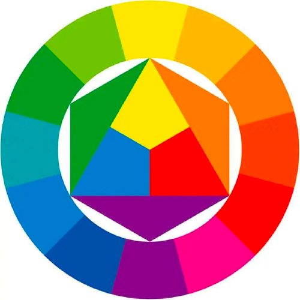
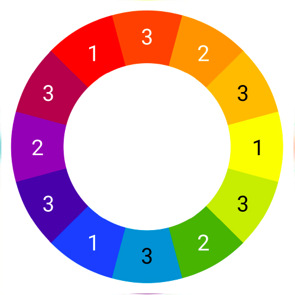

Kleurentheorie
introductie
Voordat we beginnen om uberhaupt iets te ontwerpen, wilde ik eerst een goede basis opschrijven voor mezelf over kleuren.
kleurenencirkel van Itten

Drie primaire kleuren (1):
rood, geel, blauw
Drie secundaire kleuren (2):
oranje, groen, violet
Zes tertiaire kleuren (3):
roodoranje, geeloranje, geelgroen,
blauwgroen, blauw-violet, rood-violet
De primaire kleuren kunnen niet worden gemengd uit andere kleuren, maar de secundaire kleuren kunnen ermee worden gemengd:
Violet ontstaat uit rood en blauw
Groen ontstaat uit geel en blauw
Oranje ontstaat uit rood en geel

Verschillende theorien
Complementair: deze kleuren liggen recht tegenover elkaar op het kleurenwiel. Je kan ze gebruiken om een opvallend contrast te creëren.

Analoog: analoge kleuren vind je naast elkaar op het kleurenwiel. Deze combinaties voelen comfortabel aan en vind je ook vaak terug in de natuur.

Triadisch: hier zijn de kleuren gelijkmatig verdeeld over het kleurenwiel. Ze zorgen voor levendige en opvallende combinaties, maar je moet ze voorzichtig balanceren.

Split-complementair: dit is een variatie op het complementaire kleurenschema. Het creëert een sterk contrast en geeft je meer kleuren om mee te werken. Een goede keuze voor beginners.

Tetradisch: hier zijn vier kleuren in twee complementaire paren zijn opgesplitst, wat leidt tot rijke kleurcombinaties. Dit schema werkt best wanner je een kleur dominant gebruikt en de rest als accent gebruikt.

Monochromatisch: een kleurcombinatie met slechts een kleur op het kleurenwiel. Je voegt er verschillende verzadigingen en waardes van dezelfde kleur aan toe. Deze combinatie straalt eenvoudigheid en harmonie uit. Je kan een bepaald element laten opvallen door de ‘regels te breken’ en dit in een andere kleur te zetten.

Warme kleuren
rood
Rood, een van de oudste kleuren door de mensheid gebruikt, wordt vaak geassocieerd met passie, energie, liefde en opwinding. Het trekt de aandacht en straalt kracht uit. Overmatig gebruik kan echter een overweldigend effect hebben. Het is een uitstekende keuze om kracht, passie of belang uit te drukken. Rood kan ook gevaar en aandacht symboliseren, wat het geschikt maakt voor merken die willen opvallen, zoals in de detailhandel, voedselindustrie en entertainment. Het kan de eetlust opwekken en een opvallende, emotionele impact creëren in ontwerpen en branding.


geel
Geel wordt vaak geassocieerd met de zon en licht, en het symboliseert vreugde, geluk en optimisme. In de middeleeuwen werd geel echter geassocieerd met jaloezie en verraad. Tegenwoordig wordt geel vaak gebruikt als een waarschuwingskleur in de moderne samenleving. De betekenis van geel is tweeledig: het symboliseert vreugde, geluk, optimisme en energie, maar kan ook dienen als waarschuwing voor gevaar en aandacht trekken. Deze kleur is geschikt voor merken die een positieve en vrolijke uitstraling willen uitdragen, zoals in de reis- en amusementsector. In de geschiedenis werd geel vaak gebruikt in religieuze kunst om de heiligheid van figuren en scènes te benadrukken. Het straalt een positieve en opbeurende sfeer uit, wat het aantrekkelijk maakt voor merken in de reis- en kinderindustrie.
oranje
Een kleur met sterke contrasten: we associëren het met liefde, maar ook met geweld. Met vurige passie en verwoestende oorlogsvoering. Met de lieftallige Cupido, maar ook met de kwaadaardige Duivel. Je ziet het al: rood is een speciale kleur. Wist je dat het zelfs een fysiek effect kan hebben op mensen? Zo kan het zowel je bloeddruk als ademhaling doen stijgen en je stofwisseling verbeteren. Tricky! Rood trekt onmiddellijk de aandacht. Daarom zijn stoplichten en waarschuwingsetiketten rood gekleurd. Ook de grootste filmsterren in Hollywood verkiezen hun entree op een rode loper. In je design kan rood een krachtige accentkleur zijn. Maar let op: het kan een overweldigend effect hebben als je het teveel gebruikt. Over het algemeen is rood een geweldige kleur om te gebruiken wanneer je kracht, passie of belang wil uitdrukken. Het is een veelzijdige kleur met felle varianten die energie uitstralen en donkere versies die eleganter zijn.

Koude kleuren
blauw
Blauw, een van de oudste kleuren met een rijke geschiedenis, staat voor vertrouwen, loyaliteit, rust en professionaliteit. Het symboliseert kalmte en betrouwbaarheid, waardoor het geschikt is voor bedrijven die autoriteit en betrouwbaarheid willen uitstralen, zoals financiële instellingen en technologiebedrijven. Blauw roept een gevoel van stabiliteit op en is een tijdloze keuze om een professionele en betrouwbare indruk te maken in ontwerpen en branding.


groen
Groen, historisch geassocieerd met natuur en vruchtbaarheid, symboliseert groei, gezondheid, frisheid en harmonie. Het is effectief voor merken die duurzaamheid, gezondheid en milieubewustzijn willen benadrukken, zoals in de milieusector en de gezondheidszorg. Groen straalt een positieve en rustgevende sfeer uit, waardoor het een geschikte keuze is voor ontwerpen en branding die verbondenheid met de natuur en welzijn willen uitstralen.
paars
Paars, historisch geassocieerd met koninklijkheid en luxe, symboliseert creativiteit, inventiviteit, inspiratie en passie. Het straalt zowel warmte als sereniteit uit en is geschikt voor merken die verfijning, creativiteit en een vleugje mysterie willen uitstralen, zoals in de kunst, mode en cosmetica. Paars biedt een harmonieuze combinatie van het vurige rood en het serene blauw, waardoor het een veelzijdige keuze is om een luxe en creatieve uitstraling te creëren in ontwerpen en branding.

Neutrale kleuren

zwart
Zwart, een tijdloze kleur die staat voor kracht, elegantie en formaliteit, kan een gevoel van luxe en exclusiviteit toevoegen aan ontwerpen en branding. Het wordt vaak gebruikt in de mode, luxe merken en formele gelegenheden. Hoewel zwart een sterke visuele impact heeft, is het belangrijk om het met zorg te gebruiken, aangezien het ook geassocieerd kan worden met duisternis en mysterie. In ontwerpen en branding is zwart effectief om een gevoel van kracht en elegantie te communiceren, maar het vereist balans om een evenwichtig visueel effect te behouden.
Wit
Wit, een kleur die staat voor zuiverheid, onschuld en eenvoud, biedt een schone en heldere uitstraling in ontwerpen en branding. Het wordt vaak gebruikt in minimalistisch design, medische en gezondheidszorgmerken, en om zuiverheid te benadrukken. Wit wordt geassocieerd met een gevoel van frisheid en neutraliteit. Het is een veelzijdige kleur die een gevoel van ruimte en lichtheid kan toevoegen, maar ook symbool kan staan voor leegte. Wit is geschikt voor merken die een eenvoudige, zuivere en moderne uitstraling willen bereiken.


grijs
Grijs, een neutrale en tijdloze kleur, straalt vaak elegantie, neutraliteit en moderniteit uit. Het staat voor stabiliteit en kan dienen als een uitstekende achtergrondkleur om andere kleuren te accentueren. Grijs wordt veel gebruikt in ontwerpen en branding voor zakelijke, technologische en minimalistische toepassingen. Het biedt een subtiele en kalme uitstraling, en kan variëren van koel tot warm afhankelijk van de tint. Grijs is een veelzijdige kleur die een gevoel van professionaliteit en moderniteit kan toevoegen aan verschillende ontwerpen en merkuitingen.
bruin
Bruin, een warme en aardse kleur, staat voor stabiliteit, betrouwbaarheid en verbondenheid met de natuur. Het symboliseert vaak warmte, comfort en gezelligheid. Bruin wordt veel gebruikt in ontwerpen en branding voor merken in de outdoor-, voedings- en ambachtssectoren. Het straalt een rustieke charme uit en kan een gevoel van authenticiteit en duurzaamheid communiceren. Bruin is een veelzijdige kleur die zowel gezelligheid als stevigheid kan uitdrukken, en het wordt vaak gebruikt om een natuurlijke en aangename sfeer te creëren in verschillende toepassingen.


beige
Beige, een subtiele en neutrale kleur, staat voor rust, eenvoud en neutraliteit. Het biedt een warme en ingetogen uitstraling in ontwerpen en branding. Beige wordt vaak geassocieerd met natuurlijke elementen en kan een gevoel van comfort en geborgenheid overbrengen. Het is een geschikte keuze voor merken die een kalme, tijdloze en toegankelijke indruk willen maken. De kleur beige is veelzijdig en kan worden gebruikt om een evenwichtige en aangename visuele ervaring te creëren in diverse toepassingen.
roomkleurig / ivoor
Ivoor, een zachte en warme kleur, straalt elegantie, verfijning en luxe uit. Het heeft een subtiel crèmekleurig karakter en wordt vaak geassocieerd met tijdloze schoonheid. Ivoor is geschikt voor merken die een gevoel van klasse en exclusiviteit willen overbrengen, zoals in mode, bruiloftsindustrie en luxeproducten. Deze kleur kan een rustige en verfijnde uitstraling toevoegen aan ontwerpen en branding, en het wordt vaak gekozen voor elementen die een vleugje vintage of klassieke stijl willen benadrukken.